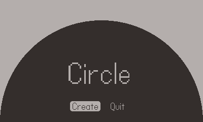
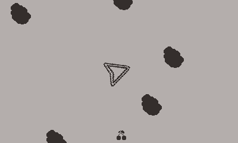

Game a Week 2023
This year, I decided to challenge myself by setting a goal to complete a new game every week. By the end, I hope that I am an more experienced game designer, who will have an improved intuition for fun gameplay and a faster ideation-to-finished-prototype cycle. Above all, I hope to brag some day that I made 100 games.
Circle
Circle is a pattern creation tool. Users can use the crank on their Playdate to control the radius of a circle. Once they confirm their radius size, the can draw more smaller circles until they run out of action points. The goal is to create an interest pattern using only circles and a limited amount of points. There is no challenge in pursuing the goal so I don't consider this to be a game, but it was fun first project for the Playdate console.
Theme: Pattern | Platform: Playdate
Asteroids
This week I made an asteroids game. My challenge was to use the crank as a primary input, so I used it for rotation. I tied movement to shooting to make the game easier to play with the crank. Sadly I wasn't able fully flesh out the idea in time, as development took longer than expected and I waited until the end to solve design issues
Theme: Crank To Turn | Platform: Playdate
